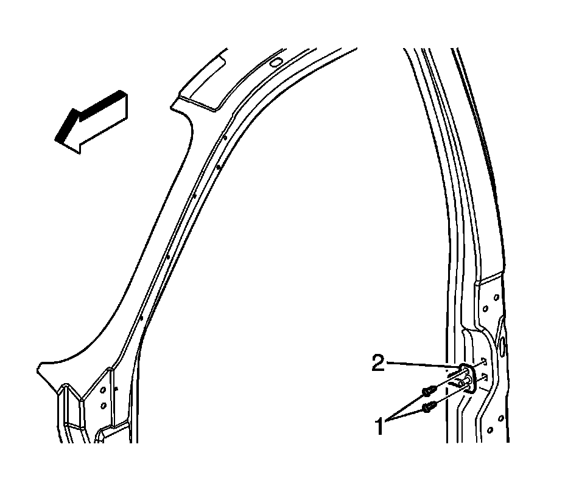

Front Door Striker: Service and Repair
DOOR STRIKER REPLACEMENT (CREW CAB)
REMOVAL PROCEDURE
IMPORTANT: If both of the door striker bolts are removed at the same time, the striker backing plate will fall into the body. This will result in additional time to perform the repair.

1. Remove the lower striker bolt.
2. Loosen the upper striker bolt enough in order to rotate the striker and the spacer, if equipped, away from the lower bolt hole.
3. Install the lower striker bolt. Tighten the lower striker bolt sufficiently in order to hold the striker backing plate in place.
4. Remove the upper striker bolt (1).
5. Remove the spacer, if equipped.
6. Remove the striker (2).
INSTALLATION PROCEDURE
1. Install the striker.
2. Install the spacer, if equipped.
3. Install the upper striker bolt (1).
4. If the striker backing plate has moved, rotate the lower striker bolt until the upper threaded hole is properly aligned.
5. Remove the lower bolt.
6. Rotate the striker (2) and the spacer, if equipped, in order to align the lower threaded hole in the striker backing plate.
7. NOTE: Refer to Fastener Notice.
Tighten the striker bolts.
Tighten the door striker bolts to 24 N.m (18 lb ft).